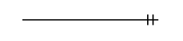
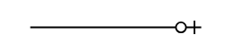
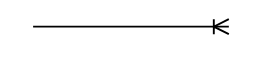
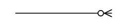

Unitat 2.4. Diagrama de Martin
1. Introducció
La notació de Martin és una representació gràfica que s'utilitza en el disseny de bases de dades per a fer el model ER. Es diferència del diagrama ER tradicional (notació de Chen) en la manera de representar les relacions i les entitats. En el diagrama de Martin, les entitats es representen com a rectangles i les relacions com a línies que connecten les entitats. A més, es poden utilitzar símbols addicionals per indicar la cardinalitat i altres restriccions.
Aquest tipus de representació també és àmpliament utilitzat per les ferramentes digitals de modelatge de bases de dades, ja que facilita la traducció del model de dades a un esquema relacional.
2. Característiques principals
En el diagrama de Martin, les entitats es representen com a rectangles amb el nom de l'entitat dins del rectangle. Les relacions es representen com a línies que connecten les entitats. Els atributs es representen com a llistes dins de les entitats.
En aquest exemple es representa el diagrama ER correponent a la relació entre Autor i Llibre:

En la fàse de disseny conceptual es pot simplificar i representar només les entitats:

2.1. Multiplicitats
Les multiplicitats es representen amb símbols al costat de les línies que connecten les entitats. S'utilitza la notació de pata de gall (en anglès crow's foot):
| Multiplicitat | Símbol |
|---|---|
| 1:1 |  |
| 0:1 |  |
| 1:N |  |
| 0:N |  |


L'anterior relació llibre-autor es representaria de la següent manera, si cada autor pot escriure 1 o més llibres i cada llibre té un únic autor:

També s'ha representat els atributs no nuls amb un asterisc (*) al costat del nom de l'atribut.
En canvi, si establim que un llibre pot tindre 0 autors (l'autor és desconegut) o varis, la relació es representaria així:

2.2. Restriccions d'atributs identificadors
Els atributs identificadors es representen amb les següents abreviatures:
- PK: Clau primària (Primary Key)
- FK: Clau forana (Foreign Key)
- AK: Clau alternativa (Alternate Key), no es sol representar.
- PK, PF: Clau primària i aliena.
- AF: Clau alternativa i aliena. No es sol representar.
- Obligatori (NOT NULL): Es representa amb un asterisc (*) o amb NN.
2.3. Representació de les relacions com a taules
En el diagrama de Martin, les relacions es poden representar com a taules. En aquest cas estaríem fent directament el disseny lògic, ja que estem representant les relacions com a taules amb els atributs i les claus primàries i foranes. Aquesta representació és útil per a la implementació directa en un sistema de gestió de bases de dades relacional.
Cada relació es representa com una taula amb els atributs de la relació i les claus primàries i foranes.

Si la relació és 1:N, podem crear una taula (igual que en l'exemple anterior) o podem propagar la clau primària de la part del costat 1 a la part del costat N com a clau forana.
El següent diagrama mostra com es representaria la relació entre Autor i Llibre si cada llibre té un únic autor i cada autor pot escriure 1 o més llibres:

Exercicis
Representa en notació Martin els diagrames ER dels exercicis 2.1, 2.2 i 2.3.
2.4. Fases en l'elaboració d'un diagrama de Martin
Amb els diagrames de Martin es poden representar les mateixes fases que amb els diagrames ER tradicionals. En aquest apartat es mostra com es representaria cada fase amb la notació de Martin.
- Disseny conceptual: Representació de les entitats i les relacions entre elles.
- Definim les multiplicitats.
- Afegim els propis de cada entitat, indicant claus primàries, sense tindre en compte claus propagades, etc
- Afegim claus propagades i creem taules per a les relacions, si és necessari.
D'aquesta manera podem anar refinant el diagrama fins a arribar a un disseny lògic que es puga implementar mes fàcilment en un sistema de gestió de bases de dades relacional.